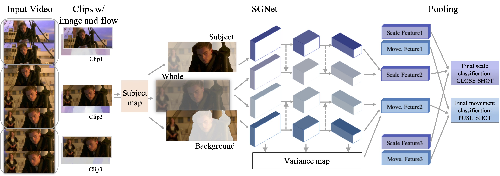

CUHK-SenseTime Joint Lab, The Chinese University of Hong Kong1
Communication University of China2
European Conference on Computer Vision (ECCV) 2020, Glasgow, Scotland, United Kingdom

Overview
In film making, shot has a profound influence on how the story is delivered and how the audiences are echoed.
As different scale and movement types of shots can express different emotions and contents, recognizing shots and
their attributes is important to the understanding of movies as well as general videos.
Classifying shot type is challenging due to the additional information required beyond the video content,
such as the spatial composition of a frame and the video camera movement.
To address these issues, we propose a learning framework Subject Guidance Network (SGNet) for shot type recognition.
SGNet separates the subject and background of a shot into two streams, serving as maps to guide scale and
movement type classification respectively. To facilitate shot type analysis and model evaluations,
we build a large-scale dataset MovieShots, which contains 46K shots from 7K movie trailers with annotations of
their scale and movement types.
Experiments show that our framework is able to recognize these two attributes of shot accurately, outperforming all the previous methods.
Dataset
Shot scale has five categories: 1) long shot (LS) is taken from a long distance,
sometimes as far as a quarter of a mile away; 2) full shot (FS) barely includes
the human body in full; 3) medium shot (MS) contains a figure from the knees
or waist up; 4) close-up shot (CS) concentrates on a relatively small object,
showing the face of the hand of a person; (5) extreme close-up shot (ECS) shows
even smaller parts such as the image of an eye or a mouth.
Shot movement has four categories: 1) in static shot, the camera is fixed but
the subject is flexible to move; 2) for motion shot, the camera moves or rotates;
3) the camera zooms in for push shot, and 4) zooms out for pull shot. While
all the four movement types are widely used in movies, the use of push and
pull shots only takes a very small portion. The usage of different shots usually
depends on the movie genres and the preferences of the filmmakers.
@inproceedings{rao2020unified,
title={A Unified Framework for Shot Type Classification Based on Subject Centric Lens},
author={Rao, Anyi and Wang, Jiaze and Xu, Linning and Jiang, Xuekun, Huang, Qingqiu and Zhou, Bolei and Lin, Dahua},
booktitle = {The European Conference on Computer Vision (ECCV)},
year={2020}
}
Contact
Anyi Rao:
anyirao [AT] ie.cuhk.edu.hk Jiaze Wang:
jzwang.cuhk [AT] gmail.com